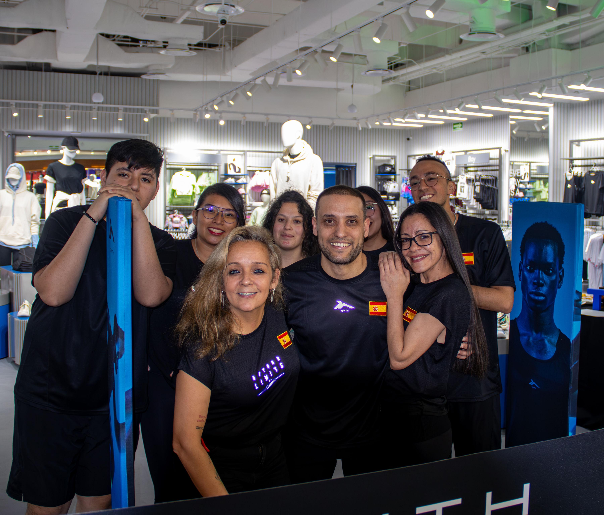
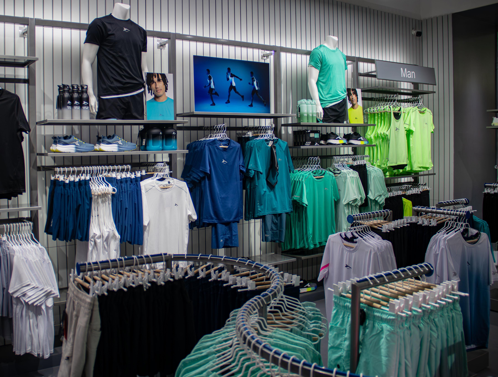
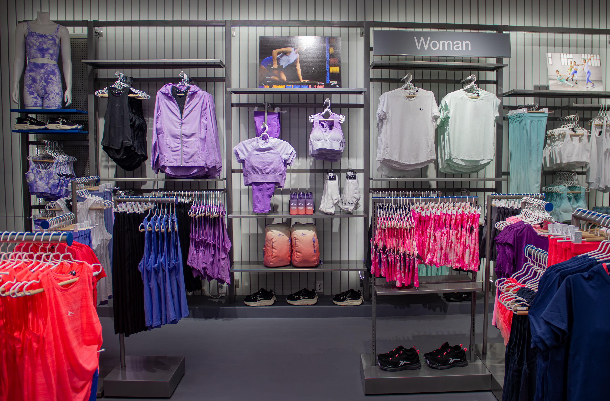

La marca española de moda deportiva Tenth ha abierto oficialmente su primera tienda en México, ubicada en el centro comercial Toreo Parque Central, en Naucalpan. Acontecimiento que marca el inicio de la expansión internacional de la marca, que llega al país con la misión de ofrecer prendas deportivas de alta calidad y diseño innovador a los mexicanos, quienes cada vez se interesan más por llevar un estilo de vida saludable y en tendencia.
Fundada en 1989 como parte del grupo Sport Street, Tenth se ha consolidado en Europa con más de 300 puntos de venta. Su misión es democratizar la moda deportiva, brindando a los consumidores productos de calidad a precios accesibles. Desde su creación, la marca ha seguido un principio clave: hacer que todos tengan acceso a prendas deportivas de diseño innovador y funcionalidad. Ahora, Tenth pone su mirada en América Latina y ha elegido México como su primer destino fuera de Europa.
La marca ofrece una variada gama de productos para mujeres, hombres, niños y niñas. Desde ropa casual que se adapta a la rutina diaria, hasta colecciones técnicas especializadas para deportes como running, yoga, fútbol, pilates y pádel. Además de prendas, Tenth ofrece tenis deportivos, accesorios y artículos funcionales, ideales para quienes buscan un estilo de vida activo sin sacrificar el estilo. Todos sus productos están diseñados en España, alineados con las últimas tendencias globales en moda deportiva.
Tenth se distingue por ofrecer ropa deportiva que combina diseño contemporáneo con accesibilidad, creando piezas pensadas para adaptarse al estilo de vida de cualquier persona, sin importar su nivel de entrenamiento o presupuesto. En el mercado mexicano, Tenth representa una opción ideal para quienes buscan calidad y versatilidad, destacándose entre otras marcas por su enfoque en la funcionalidad y la sostenibilidad. Sus prendas están diseñadas no solo para potenciar el rendimiento deportivo, sino también para integrarse perfectamente en el día a día, aportando comodidad y estilo en cualquier ocasión
Su propuesta se basa en la calidad de materiales y acabados, posicionándose como una alternativa versátil frente a otras marcas deportivas del mercado. Mientras muchas marcas de ropa deportiva se centran exclusivamente en la funcionalidad o en la moda, Tenth logra un equilibrio que no solo favorece el rendimiento, sino que también se adapta a estilos de vida urbanos, creando piezas que funcionan igual de bien dentro y fuera del gimnasio.
Una de sus claves diferenciadoras es su compromiso con ofrecer productos diseñados para resistir cualquier desafío. Sus abrigos acolchados confeccionados con materiales técnicos de última generación, son un claro ejemplo de ello, proporcionando confort térmico y detalles funcionales como capuchas desmontables y bolsillos termosellados. Además, sus colecciones están alineadas con un enfoque sostenible, lo que refleja un esfuerzo consciente por minimizar el impacto ambiental, algo que muchas marcas aún no priorizan.
Para Tenth, la accesibilidad no significa sacrificar calidad o innovación, sino democratizar el acceso a prendas que combinan estilo, rendimiento y responsabilidad.
Con la apertura de esta tienda, la marca busca conectar con los mexicanos, quienes comparten una pasión por el deporte, el trabajo en equipo y el bienestar. La expectativa de Tenth es consolidar su presencia en el país y expandirse a otras ciudades mexicanas en los próximos años, además de seguir desarrollando su tienda en línea para facilitar el acceso a sus productos a nivel nacional.
Con su llegada a México, Tenth refuerza su compromiso de ofrecer productos deportivos que combinan estilo, funcionalidad y accesibilidad para todos aquellos que buscan integrar el deporte en su vida diaria y mejorar su bienestar.